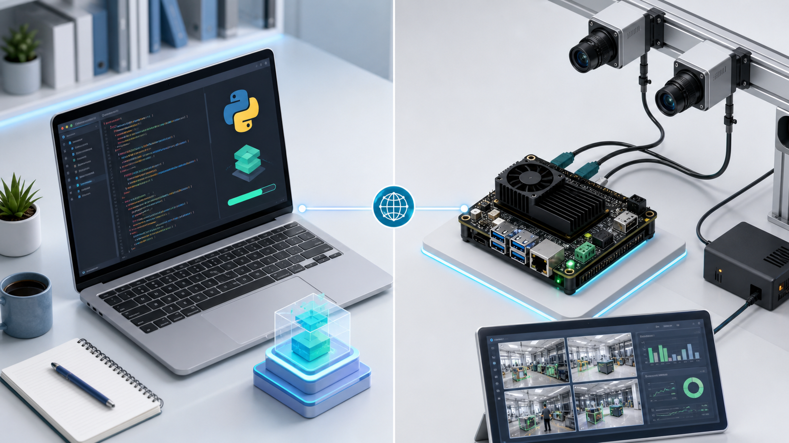
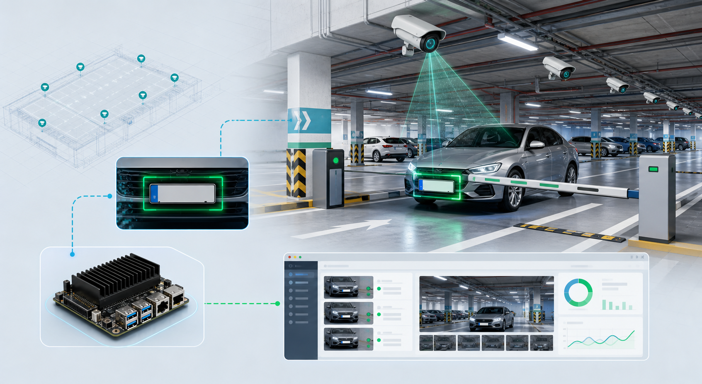

最多 4 路输入
摄像头编号、视频文件、图片或 RTSP 地址都可作为输入源。
地库车辆定位系统完整可视化教程。HTML 文件可离线打开，图片路径位于 docs/tutorial-assets/。
本仓库把多路摄像头画面送入车牌检测和识别后端，记录车辆最后一次出现位置，并通过 Web 控制台查询车牌轨迹。PC 用 YOLO pose + PaddleOCR 调试，RDK X5 用 BPU `.bin` 模型部署。
摄像头编号、视频文件、图片或 RTSP 地址都可作为输入源。
PC 后端方便开发；RDK BPU 后端用于现场部署。
SQLite 保存车牌号、摄像头编号、时间和裁切图。
Web 控制台通过 HTTP 提供页面和 API，浏览器直接访问。
把仓库分成入口、业务模块、板端适配、静态前端、模型资源和文档六类，能快速定位修改点。
维护规则：入口变更后同步更新 README、仓库地图、测试说明和本可视化教程。
系统把“视频帧”变成“可查询的最后位置”。下图对应 `web_app.py` 的运行时和 `utils/inference.py` 的后端抽象。

`ultralytics` 加载 `.pt` 模型，PaddleOCR 识别裁切后的车牌文本，适合开发和演示。
`hbm_runtime` 加载 YOLO `.bin`，LPRNet `.bin` 负责字符识别，适合板端部署。
`DBManager` 写入每次车牌出现事件，查询按 `timestamp DESC, id DESC` 返回末次位置。
`utils/inference.py` 用 `VehiclePlateDetector.detect(frame)` 统一 PC 和 RDK 两种后端。调用方只关心输入是一帧 OpenCV BGR 图像，输出是 `DetectionResult[]`；至于是 `.pt + PaddleOCR` 还是 `.bin + LPRNet`，都被封装在后端内部。
| 对象 / 字段 | 类型或来源 | 作用 | 后续去向 |
|---|---|---|---|
| `frame` | `np.ndarray`，OpenCV BGR | 单路摄像头、视频或图片当前帧 | 传入 `detector.detect(frame)` |
| `box` | 车牌矩形框 4 点 | 用于画包围框，辅助前端确认检测位置 | `draw_annotations()` |
| `pts` | 车牌四角关键点 | 透视变换裁切车牌，是识别准确率的关键 | `crop_plate(frame, pts)` |
| `text` | OCR / LPRNet 输出清洗结果 | 作为车辆轨迹主键 | `DBManager.record_occurrence()` 和 `/api/events` |
| `confidence` | 识别置信度 | 用于日志展示和调试识别质量 | 事件列表、标注文字 |
| `crop` | 透视矫正后的车牌小图 | 保存证据图，便于查询时回看 | SQLite `crop_image` BLOB |
PC 后端适合开发机验证算法和 Web 页面。它的主要瓶颈通常在 YOLO 推理和 PaddleOCR 初始化/识别。
frame
-> YOLO(yolo_model_path)(frame)
-> result.keypoints.xy / result.boxes.xyxy
-> crop_plate(frame, pts)
-> PaddleOCR.predict(...) 或 PaddleOCR.ocr(...)
-> clean_plate_number(text)
-> DetectionResult(box, pts, text, confidence, crop)RDK 后端适合现场部署。它把检测和识别都放到 BPU runtime，避免 PC 后端依赖 PaddleOCR。
frame
-> UltralyticsYOLOPose.predict(frame)
-> pre_process: BGR -> resize/letterbox -> NV12
-> forward: hbm_runtime.HB_HBMRuntime.run(...)
-> post_process: decode boxes/keypoints + NMS
-> crop_plate(frame, pts)
-> LPRNetRecognizer.recognize(crop)
-> clean_plate_number(text)
-> DetectionResult(...)PC 和 BPU 后端都可能占用大量计算资源。串行推理可以避免多线程同时访问模型 runtime，特别是 BPU runtime 的调度冲突。
地库监控更重实时性。旧帧被覆盖后不会积压，系统宁可丢过期画面，也不让延迟无限增长。
`_run_inference` 捕获单帧推理异常，把最近 20 条错误写入 `errors`，`/api/events` 返回给前端用于排障。
| 线程 / 请求 | 创建位置 | 读写对象 | 同步机制 | 退出条件 |
|---|---|---|---|---|
| 采集线程 | `WebInferenceRuntime.start()` | 写 `LatestFrameBuffer.frames` | `frame_buffer.lock` + `has_new_frame.set()` | `stop_event.is_set()` |
| 推理线程 | `threading.Thread(target=_run_inference)` | 读缓冲；写 `camera_frames/events/latency/errors`；写 SQLite | `frame_buffer.has_new_frame.wait()` + `runtime.lock` | `stop_event.is_set()` |
| `/api/events` 请求 | `ThreadingHTTPServer` | 读 `WEB_RUNTIME.snapshot()` 或数据库最近记录 | `runtime.lock` 复制快照 | 请求完成即释放 |
| `/api/search` 请求 | `ThreadingHTTPServer` | 读 `vehicle_locator.db`，必要时模糊查询 | SQLite 短连接；不共享 cursor | 请求完成即释放 |
PC 端用于快速复现、调试 Web 控制台和验证 `.pt` 模型。完整依赖细节见 安装与部署教程。
建议：先用 `--backend none` 验证页面，再安装 PaddleOCR 和 Ultralytics 跑 PC 推理。
使用 Python 3.10，避免 PaddleOCR、PyQtWebEngine 和 OpenCV 之间的版本问题。
conda create -n garage_ocr python=3.10 -y
conda activate garage_ocr
python -m pip install --upgrade pip setuptools wheel`requirements.txt` 是桌面/WebView 基础依赖，PC 推理还需要 `ultralytics`、`paddlepaddle` 和 `paddleocr`。
python -m pip install -r requirements.txt
python -m pip install ultralytics paddlepaddle paddleocr使用测试图输入，页面会展示监控画面、通行日志、末次位置查询和路径示意。
python web_app.py --backend pc --host 127.0.0.1 --port 8080 --inputs assets/test_plate.jpg assets/test_plate2.jpg --yolo-model models/yolo11m-pose-carplate.pt桌面窗口只是把本地 Web 控制台包进 PyQt WebView，适合演示机。
python webview_app.py --backend pc --inputs assets/test_plate.jpg assets/test_plate2.jpg板端部署的核心是确认 `hbm_runtime`、复制 `.bin` 模型、安装最小依赖，然后用 `web_app.py --backend bpu` 监听局域网。

ssh sunrise@<RDK-IP>
cd ~/garage_locator
python3 -c "import hbm_runtime; print('hbm_runtime OK')"
python3 -m pip install --user -r requirements-rdk.txtpython3 web_app.py \
--backend bpu \
--host 0.0.0.0 \
--port 8080 \
--inputs /dev/video0 \
--yolo-bin models/yolo11m-pose-carplate_bayese_640x640_nv12.bin \
--lpr-bin models/lpr.bin这里列出本仓库直接使用或部署时需要理解的技术。链接优先指向官方文档或稳定项目入口。
项目主语言，负责 HTTP 服务、图像处理、推理调度和数据库写入。
Python 官方文档`web_app.py` 使用标准库 HTTP 服务提供静态页面和 JSON API，不依赖额外 Web 框架。
http.server 文档PC 端环境隔离工具，避免 OpenCV、PaddleOCR、PyQt 依赖互相污染。
Conda 安装文档读取摄像头、视频和图片，编码 Web 画面，执行车牌裁切和透视变换。
VideoCapture 文档PC 端加载 YOLO pose `.pt`，输出车牌框和四个角点。
Ultralytics 文档PC 后端使用 PaddleOCR 识别裁切后的中文车牌文本。
PaddleOCR 安装文档板端 BPU runtime，负责加载 `.bin` 模型并运行加速推理。
D-Robotics RDK Model Zoo RDK 官方下载文档本地轨迹库，保存车牌号、摄像头编号、时间和车牌裁切图。
Python sqlite3 文档承载图像数组、关键点坐标和后处理计算，是 OpenCV 与模型输出之间的基础数据结构。
NumPy 文档用于绘制中文标注和字体回退，弥补 OpenCV 原生文字绘制对中文支持不足的问题。
Pillow 文档几何处理依赖之一，可用于多边形裁切、偏移和后处理场景。
pyclipper PyPI桌面 WebView 壳，用于把 Web 控制台包成 PC 桌面窗口。
PyQt5 文档Web 控制台和本静态教程页使用的前端基础技术。
MDN Web 文档RDK 长期部署时可用 systemd 把 Web 服务配置为开机启动。
systemd 项目文档代码版本管理，提交文档、模型白名单和部署脚本变更。
Git 官方文档安装 `requirements.txt` 和 `requirements-rdk.txt` 中的运行依赖。
Python 包安装指南提交前至少跑轻量验证。PC 和 RDK 的完整联调命令见 TESTING.md。
最低门槛：语法编译、入口 `--help`、核心导入、数据库烟测。
python -m py_compile web_app.py webview_app.py utils/__init__.py utils/camera_worker.py utils/db_manager.py utils/detect_plate_rdk.py utils/gui_theme.py utils/inference.py utils/plate_utils.py utils/preprocess.py utils/postprocess.py utils/ultralytics_yolo_pose.py test/test_headless.py
python web_app.py --help
python webview_app.py --help
python test/test_headless.py --help
python utils/detect_plate_rdk.py --helppython -c "import tempfile, os, gc; from utils.db_manager import DBManager; fd,p=tempfile.mkstemp(suffix='.db'); os.close(fd); db=DBManager(p); db.record_occurrence('皖AS0747',1); db.record_occurrence('皖AS0747',2); db.record_occurrence('皖AQ4025',3); assert db.query_last_location('皖AS0747')['camera_id']==2; fuzzy=db.query_fuzzy('皖A'); assert {row['plate_number'] for row in fuzzy}=={'皖AS0747','皖AQ4025'}; db=None; gc.collect(); os.remove(p); print('db smoke OK')"| 验收项 | 通过标准 | 相关文件 |
|---|---|---|
| Web 页面 | `--backend none` 能打开首页和 `/api/events` | `web_app.py`、`web/` |
| PC 推理 | 测试图片可产生监控帧和事件日志 | `utils/inference.py`、`.pt` 模型 |
| RDK 推理 | `hbm_runtime` 可导入，BPU 后端能加载 `.bin` | `utils/ultralytics_yolo_pose.py`、`.bin` 模型 |
| 数据库 | 同一车牌按最新 `id` 返回末次位置 | `utils/db_manager.py` |
下面是最常见的失败点。详细排障说明见 安装与部署教程的常见问题。
最容易踩坑：在 PC conda 环境里运行 `--backend bpu`，这会找不到 RDK 板端的 `hbm_runtime`。
PC 安装 `opencv-python`；RDK 优先 `requirements-rdk.txt` 或系统 `python3-opencv`。
只影响 PC 后端。先安装 CPU 版 PaddlePaddle，再装 PaddleOCR。
只应在 RDK 上使用 BPU 后端，确认板端系统 Python 和厂商 SDK。
改用 `--port 8090`，或用 `netstat` / `ss` 找到占用进程。
检查 `/api/events`、输入源路径、摄像头权限和终端推理异常。
检查裁切图质量、角点顺序、OCR 模型下载和 LPRNet 字符表匹配。
本页是可视化总览，真实命令和维护细则仍以 Markdown 文档为准。
从 Conda 到 PC/RDK 部署的详细命令。
模块边界、数据流和维护约定。
轻量测试、PC 联调和 RDK 联调。